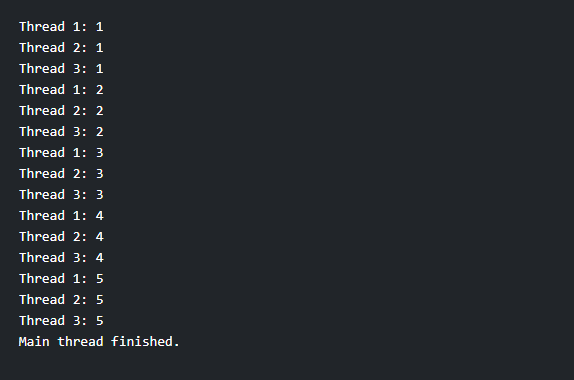

Create the program to create multiple threads, show an example of join and yield methods.
Code:-
class MyThread extends Thread {
public MyThread(String name) {
super(name);
}
public void run() {
for (int i = 1; i <= 5; i++) {
System.out.println(Thread.currentThread().getName() + ": " + i);
// Demonstrate the use of yield method
Thread.yield();
}
}
}
public class ThreadExample {
public static void main(String[] args) {
// Create three threads
MyThread thread1 = new MyThread("Thread 1");
MyThread thread2 = new MyThread("Thread 2");
MyThread thread3 = new MyThread("Thread 3");
// Start the threads
thread1.start();
thread2.start();
thread3.start();
try {
// Demonstrate the use of join method
thread1.join();
thread2.join();
thread3.join();
} catch (InterruptedException e) {
e.printStackTrace();
}
System.out.println("Main thread finished.");
}
}
Output:-
